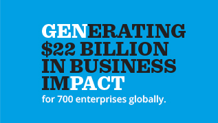

Swipe or drag to flip the pages, click to open items
Every enterprise is a collection of common processes strung together by technologies that help deal with massive and mutating amounts of data from an increasingly complex and interconnected world. The intelligent enterprise differentiates itself and outcompetes by turning common processes into smarter processes with superior analytics and class-leading technology and in turn, delivering superior business outcomes.
Process - Companies structure themselves using functions and organizational policies; people and culture tune themselves to this functional view of the organization. Companies across all industries have a set of common, core enterprise-level processes that determine how they acquire new customers, retain them and grow existing relationships, hire and retain their workforce, develop and distribute their offerings and manage their supply chains. What differentiates the leaders from the laggards is how they view processes as a key component of business outcomes. For example, many organizations focus on driving process efficiencies - saving money within the process - and not effectiveness, which means setting enterprise-level strategies for processes to achieve desired business outcomes.
Analytics - The emergence of big data, regulatory changes and social media developments are causing a big shift in the way businesses operate. Most companies know data is an asset and yet, even as a majority of this data sits within their organization, they have not been able to tap its true potential. How one company harnesses this data compared to others, makes all the difference. Intelligent enterprises innovate with data and employ analytics to identify trends and issues, uncover new insights, identify and prevent future risks and fine-tune operations to meet business goals.
Technology - Technology has become a clear driver of flexibility and innovation in all business models. New technology and social connectivity are creating a deluge of opportunities, paving the way for cloud and other collaboration tools to transform internal operations, customer relationships and industry value chains. Intelligent enterprises must move quickly to seize the technology dividend. When applied intelligently – using insights from existing operations and emerging opportunities, with minimal capital expenditure along a variable cost model, and delivered in a scalable fashion using new mobile, SaaS and social media-based channels – technology can have an exponential impact on outcomes.
Genpact’s Smart Decision Services is a blend of industry expertise, process capability, analytics and technology. We change the way our clients drive their business outcomes – top-line revenue, cost optimization and asset and risk management – by using insights from internal and external ecosystems to make smarter decisions that address challenges around regulations, risk and growth.
Companies are witnessing a huge explosion of big data availability. This encompasses structured, semi-structured and unstructured data across internal transaction systems, syndicated research sources and social media. The upside is unprecedented growth opportunity for companies.
Our analytics services help clients leverage all available data – including previously unused data - to understand customers, partners, markets and businesses and thus drive business impact.
Clearly technology is a key driver of enterprise strategy, and can have huge impact if driven smartly. That is, technology should be highly usable, with shorter implementation times, ease of configuration, mobility and seamlessly accessed through the internet.
With one of the largest Information Technology services practice, we bring transformational impact to our clients by combining global process leadership, analytics, reengineering and domain expertise with high-end technology development capability. We deliver a full spectrum of IT services including application development and maintenance, IT managed services, enterprise application services, and business and domain consulting. The services help clients intelligently leverage latest computing and mobility trends by harnessing the power of platforms and technologies, built using insights from existing processes.
Over the years, we have built a number of technologies and platforms, many of them flexible enough to be bolted on to the existing technologies of our clients. What makes them unique is that they all have intelligence built in. We do it through strong analytical insights distilled from best–in-class processes applied back to technology.
The technologies and platform offerings include end-to-end solutions, industry-specific solutions, horizontal process solutions, legacy extensions, transition, and visibility solutions. Soon, some of these technologies will be on the cloud, accessible from anywhere in the world for our clients.
Throughout our history, clients have told us that our ability to combine a bottom-up, granular, process-based approach, with Lean Six Sigma, is unique. Our Smart Enterprise Processes (SEP) framework is built on this approach and it drives our differentiation.
Our Smart Enterprise Processes (SEP) methodology is a proprietary business process management framework. It helps organizations to consistently perform well in volatile environment and provides them the ability to anticipate change, dexterity to adapt to new conditions and spirit to innovate and produce new solutions. These organizations focus on process effectiveness as well as efficiency and operate smoothly across global markets. We call them Intelligent Enterprises.
What is SEP
SEP is an uncompromisingly logical yet unique methodology that employs granular data analysis, ultra-sophisticated diagnostics and cross-functional benchmarks to maximize process effectiveness and achieve for example:
As businesses grapple with rapidly changing economic conditions, globalization pressures, rising competition and shareholder expectations, optimizing business process is more important than ever. The SEPSM framework can make enterprises more competitive and intelligent by significantly improving their business outcomes such as cash flows, margins and revenue growth.
With the SEPSM framework, a business is able to:
In our experience a key reason for process under performance is the lack of performance measures, including industry benchmarks and best practices. SEP diagnoses value-oozing process gaps and makes relevant recommendations to plug these leakages. It also unearths key business insights through sophisticated process data analysis and decades of process experience which then enable a business to compare its processes to industry benchmarks.These insights we provide to clients, along with our deep execution expertise including change management, can deliver differentiated outcomes for the Intelligent Enterprises to out-compete others.
Some of the industry benchmarks are mentioned below:
Genpact partnered with CFO Research to conduct a ground-breaking benchmarking study on business process performance at large companies around the world. Covering 434 companies with revenue of $1 Billion or more, the report captures detailed benchmark data from senior finance executives on four fundamental business processes: Financial Planning, Source to Pay, Order to Cash and Financial Reporting including industry level comparison of performance.
This study is a continuation of research that we have been conducting within the finance function over the last 3 years. Our 2010 study, also with CFO Research, focused on analyzing the CFOs role in standardizing global processes and improving business outcomes by making a shift from measuring process efficiency to effectiveness. A 2011 study with Chartered Institute of Management Accountants (CIMA) explored how CFOs need to drive the transformation of delivery of financial services within their companies to create greater value and improve organizational performance.

Genpact powers hospitality and travel companies through a continuum of smarter processes, smarter analytics and smarter technology and helps minimize their cost of operations, centralize operations and drive effectiveness and efficiency through innovations.
Smarter Processes
Our geographical presence and Business Process Management experience in emerging markets helps in setting up regional shared service centers which can provide scalable and standardized operations model for hotel operations.
Our strong operating excellence framework and governance structure goes hand-in-hand with our client centric model, enabling our clients to achieve superior business outcomes.
Smarter Analytics
Our ‘On-Demand’ analytics service can help reduce costs as well as impact customer experience through: